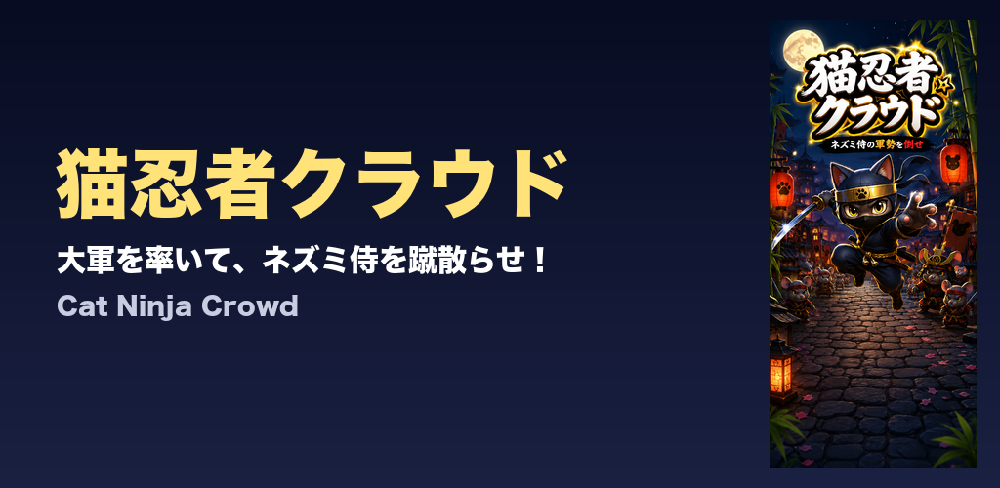

左右にスワイプして猫忍者の群れを動かし、数字ゲートをくぐって仲間を増やしていく群衆ランゲームです。手裏剣は自動で飛び、刀・マシンガン・鉄砲・大砲・カラクリ戦車の5種類の武器を拾えます。ステージの奥では18体の武将ボスが待っています。
ご質問・不具合のご報告は下記メールアドレスまでお願いします。
Q. プレイ回数はどうすれば増えますか？
A. 動画広告を視聴すると回数が追加されます。また「広告なし・無制限（¥500）」を購入すると、広告なしで無制限にプレイできます。
Q. 購入を復元したい
A. iPhone は購入時と同じ Apple ID、Android は購入時と同じ Google アカウントでご利用であれば、購入画面から復元できます。復元できない場合はお問い合わせください。
Cat Ninja Crowd is a crowd runner: swipe to steer a crowd of ninja cats and run through number gates to grow your army. Shurikens fire on their own, you can pick up five weapons, and each stage ends with one of 18 rat warlords. Ads and purchases never change your score.
Download: App Store / Google Play. For support, email the address above. To restore a purchase, use the same Apple ID or Google account you bought with and tap Restore on the purchase screen.